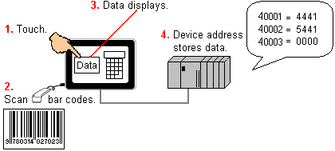

|
|
|
|
|
|
|
|
When connected to a target machine's serial or USB port, bar code scanners capture product information from bar code symbols. You can then copy the scanned information to other variables for storage or display.


Which bar code scanner driver to use depends on the bar code scanner that is being connected. For more information, see Section 24.1.2, Setting Up the Bar Code Scanner Driver.
For recommended bar code scanners, see Appendix 5, Hardware Specifications.
See Appendix 5, Hardware Specifications for which target machines support bar code scanners.
USB bar code scanner emulates a USB version 1.1 keyboard; therefore, data transfer speeds are limited to the speed of this protocol. Test your application thoroughly to ensure your target machine's data transfer speed is sufficient for your requirements.
Windows based targets (iPC, XBTGTW) support USB Bar code scanners, but they do not support the Vijeo Designer USB Barcode Scanner Driver. Windows based targets us their operating system's built-in USB Bar Code Scanner driver to communicate with USB Bar Code scanners.

No more than one serial barcode scanner and one USB barcode scanner can be used at the same time in a single project. If your project uses more than one serial barcode scanner and more than one USB barcode scanner, the scanners may not function properly.
Follow the steps below to set up the bar code scanner on the target machine: